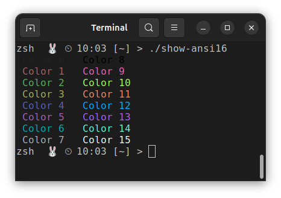
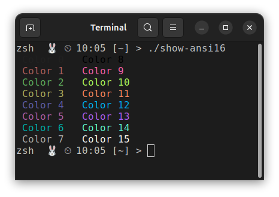
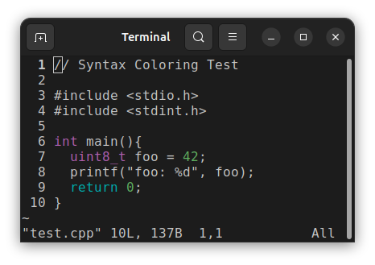
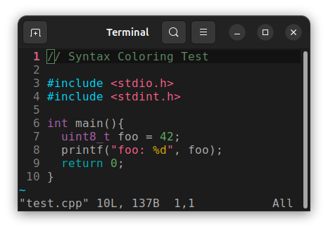
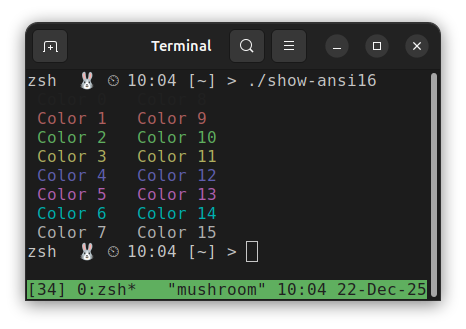
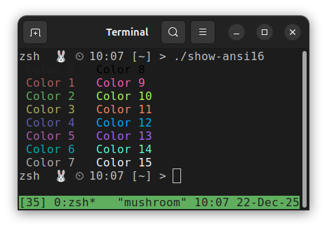
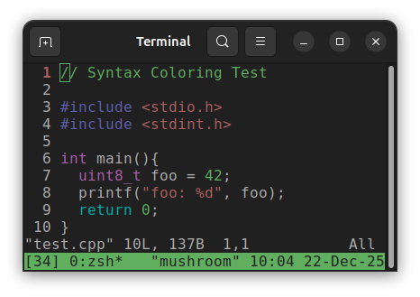
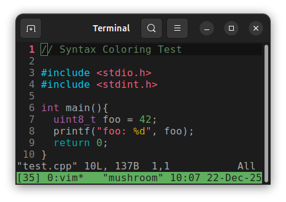

TERM Environment Variable
How $TERM affects colors.
The environment variable TERM specifies the terminal type and the set of features, such as color support, that applications can rely on when rendering output.
This page shows examples of how colors are printed on the command line and within a Vim color scheme for different values of the TERM environment variable, both inside and outside of tmux.
TL;DR
To ensure full ANSI 256 color support, set TERM as follows:
| Context | TERM Value |
|---|---|
Before launching tmux |
xterm-256color |
Inside tmux |
tmux-256color |
Common Values of TERM
The table below summarizes common TERM values and how each affects color rendering.
| TERM Value | Color Support Description |
|---|---|
screen |
Supports only the base 8 colors as defined by the terminal program. |
xterm-256color |
Supports the full ANSI 256 color set. |
tmux-256color |
Supports the full ANSI 256 color set for applications running inside tmux. |
Without tmux
These examples show how color rendering differs for various values of TERM when not using tmux. They were created in a zsh environment, but the behavior is the same in bash.
Base Colors Print
These screenshots show how the base 16 colors, as defined by the terminal program’s color settings, render when TERM is set to screen and xterm-256color, respectively.
In both cases, the colors render correctly.
TERM=screen |
TERM=xterm-256color |
|---|---|
 |
 |
Vim Syntax Highlight Example
These screenshots show how the same code renders under different values of the TERM environment variable, using a Vim color scheme. The colors displayed are defined by the Vim color scheme, not by the terminal settings.
TERM=screen |
TERM=xterm-256color |
|---|---|
 |
 |
Some syntax highlighting is not displayed when using TERM=screen because the corresponding colors, as defined by the Vim color scheme, fall outside the base 8 color set. In summary:
Base 8 colors (render correctly with TERM=screen):
Violet : types
Cyan : return statement
Green : numbersANSI 256 colors (render incorrectly, not part of the base 8):
Blue : #include statement
Red : strings
Yellow : `%d` format specifier
Dark Green : Comment colorUsing tmux
These examples show how color rendering differs for various values of TERM when using tmux. For the columns labeled TERM=screen or TERM=xterm-256color, the TERM variable was set before launching tmux.
These examples were generated by starting zsh, launching tmux, and then opening a new shell inside tmux. Inside tmux, the TERM value defaulted to tmux-256color.
Shell choice does not affect color rendering; the behavior shown here is the same in bash and zsh.
Base Colors Print
These screenshots show how the base 16 colors, as defined by the terminal program’s color settings, render when TERM is set to screen and xterm-256color, respectively.
When setting TERM=screen inside tmux, colors 8-15 render the same as colors 0-7 because only the base 8 colors are advertised. When using xterm-256color, all colors 0-15 are advertised and therefore render distinctly.
TERM=screen |
TERM=xterm-256color |
|---|---|
 |
 |
Vim Syntax Highlight Example
The color display behavior is different when using TERM=screen outside of tmux and tmux-256color inside tmux with syntax highlighting enabled. Syntax highlighting still applies colors that are defined outside of colors 0–7; however, when TERM=screen is used, the terminal maps those colors to the closest available base 8 color.
TERM=screen |
TERM=xterm-256color |
|---|---|
 |
 |
Notice that the red and blue colors defined in the Vim color scheme are brighter than the base 8 red and blue. When using TERM=screen, tmux approximates these colors by mapping them to the nearest base 8 color.